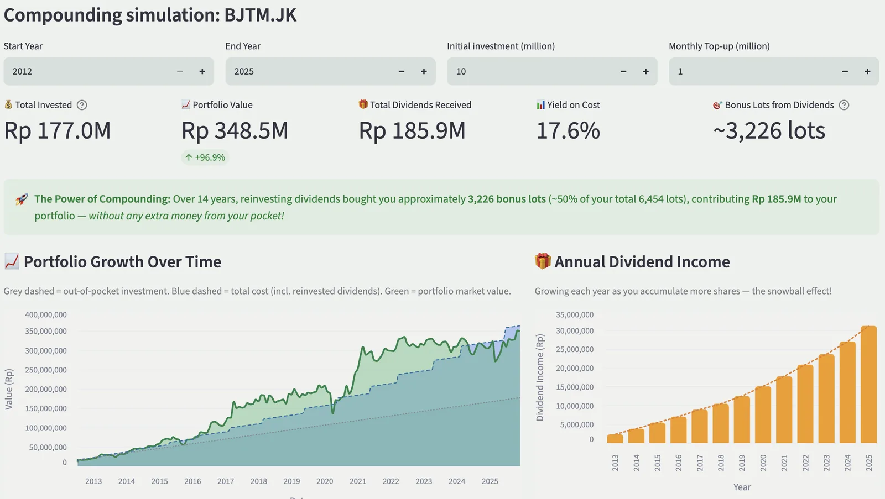

Supporters:a 12-month dividend paycheck forecast and cum-date alerts on your holdings.
Shown only once Phase C is live.

For supporters
The nightly routine, done for you.
After every IDX close, Panen Dividen scans the market for dividend plays, short swings
and long-term positions, and publishes each one as a card with its entry, stop, target
and sell-by date.
Every card, the night it is published
Free visitors see yesterday's cards. Supporters see tonight's.
A journal that watches the calendar
Track the trades you take, with sell-by countdowns.
Alerts on Telegram
A nightly digest and reminders before a position must be sold.
Compare reinvesting versus not reinvesting using the history of a single stock
or several, complete with allocation, residual cash, and a transaction log.
Study which months tend to be cheaper, how lows are distributed before the ex-date,
and recovery patterns afterwards, all from auditable historical data.
Screen IDX companies that stay profitable and keep growing while their P/E and P/S
multiples sit below historical ranges. Results are shown as scenarios, not price targets.
Prices are placeholders (decision D3); the line is read from TIERS. Full tier cards live on /supporter.
Start with one stock you want to understand.
Open the Ranking Screener, pick a market, then explore dividends, fundamentals,
valuation, price action, and compounding simulations from a single page.